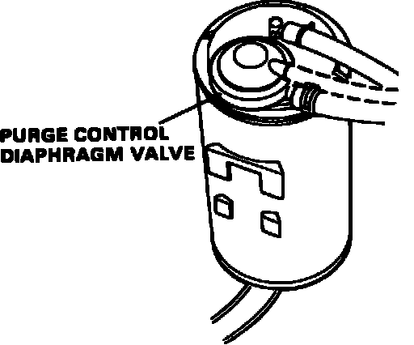

Evaporative Emission Control Canister: Description and Operation
Evaporative Control Canister:

The carbon canister, located left side engine compartment near air filter housing, is a device for storing fuel vapor. It contains activated charcoal that absorbs and stores fuel vapor.